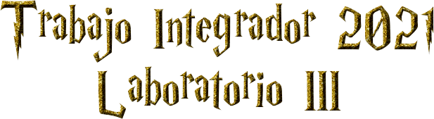
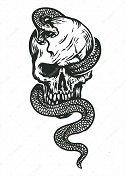
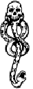

1.
¿31/07/1980 es la fecha en la que nació Harry Potter?
Si
No
2.
¿Sabías que la autora de los libros es una mujer?
Si
No
3.
¿En que año se estreno su primera película?
2001
2002
2004
2005
4.
¿Cómo se llama su 5to libro?
Harry Potter y...
5.
¿En cuántas películas fue director David Yates? (Más de una opción puede ser correcta)
La Orden del Fenix
El Caliz de Fuego
El Misterio del Principe
Reliquias de la Muerte Parte 1 y Parte 2
6.
El padre de Harry junto con sus 3 amigos tienen la capacidad de transformarse en "Animagos", a Sirius Black, ¿Cuál le corresponde?
Ciervo
Rata
Perro
Hombre Lobo
7.
En Harry Potter y el Cáliz de Fuego realizan un evento legendario, ¿Cómo es el nombre de él?
El torneo de los Tres Magos
El torneo de los Cuatro Magos
8.
¿Cuántos Horrocrux existen?
5
6
7
8
9.
El colegio Hogwarts utiliza un Sistema de Casas, a cada estudiante se le asigna una de las 4 que existen, ¿A cuál pertenece Draco Malfoy?
Gryffindor
Ravenclaw
Hufflepuff
Slytherin
10.
Los Mortífagos llevan tatuada la Marca Tenebrosa, ¿Cuál de estas imágenes es la correcta?

